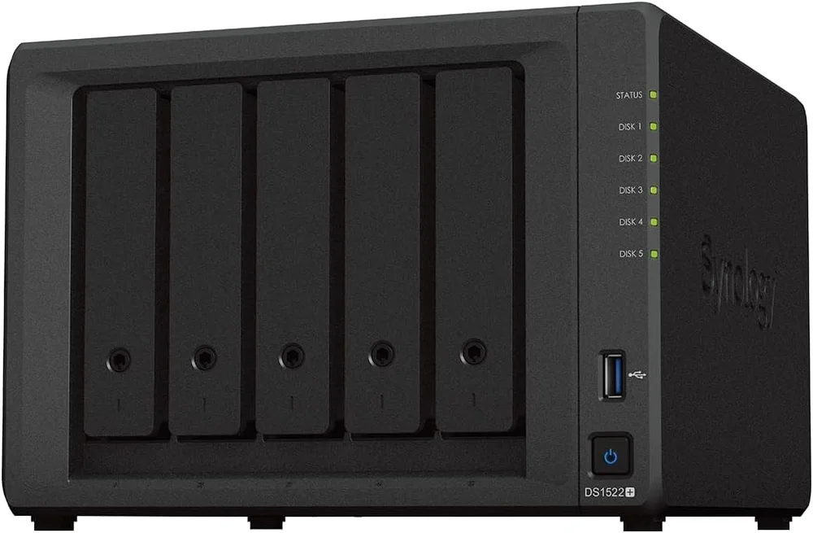
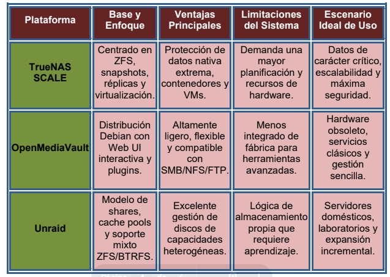

Introducción
En esta actividad se analizaron distintas soluciones NAS de código abierto orientadas al almacenamiento, copias de seguridad y administración de archivos en entornos corporativos.
También se estudiaron protocolos seguros FTPS y estrategias de respaldo para garantizar la integridad de la información.

Evaluación de Sistemas NAS
Se analizaron diferentes sistemas operativos NAS utilizados en infraestructuras profesionales.
La elección depende del hardware disponible, necesidades empresariales y experiencia técnica del administrador.
- TrueNAS SCALE
- OpenMediaVault
- Unraid
TrueNAS SCALE
TrueNAS SCALE destaca por utilizar el sistema de archivos ZFS, ofreciendo alta integridad de datos, snapshots y replicación avanzada.
Es una solución muy utilizada en entornos empresariales donde la seguridad y recuperación de información son prioritarias.
OpenMediaVault
OpenMediaVault está basado en Debian y ofrece una administración sencilla mediante interfaz web.
Es ideal para equipos modestos y laboratorios educativos.
Además permite integrar:
- RSync
- SMB
- FTP
- Plugins adicionales
Unraid
Unraid permite utilizar discos de diferentes capacidades dentro del mismo sistema.
También incorpora virtualización, Docker y servicios multimedia, siendo muy popular en homelabs.
Tabla Comparativa
Se realizó una comparativa entre las distintas plataformas NAS teniendo en cuenta:
- Rendimiento
- Escalabilidad
- Facilidad de uso
- Compatibilidad
- Seguridad

Importancia de las Copias de Seguridad
RAID no debe considerarse una copia de seguridad.
Aunque permite mantener disponibilidad de servicio, no protege frente a:
- Borrados accidentales
- Ransomware
- Corrupción de datos
- Errores humanos
Por ello se recomienda utilizar:
- Snapshots
- Replicación remota
- Backups externos
Planificación de Backups
Se definió una estrategia de copias de seguridad periódicas.
- Snapshots horarios
- Replicación nocturna
- Backups semanales
- Copias offline mensuales
FTPS y Seguridad
FTPS consiste en FTP protegido mediante cifrado TLS/SSL.
Este protocolo evita el envío de credenciales en texto plano.
Para un funcionamiento correcto se recomienda:
- Utilizar TLS actualizado
- Configurar puertos pasivos
- Restringir permisos
- Monitorizar logs
Clientes FTP Analizados
Se estudiaron diferentes clientes de transferencia FTP y FTPS.
- FileZilla Client
- WinSCP
- Cyberduck
FileZilla destacó por su compatibilidad multiplataforma y facilidad de uso.
Conclusión
Gracias a esta actividad se comprendió la importancia de los sistemas NAS y las estrategias de backup en entornos empresariales.
También se analizaron protocolos seguros de transferencia de archivos y buenas prácticas de administración.